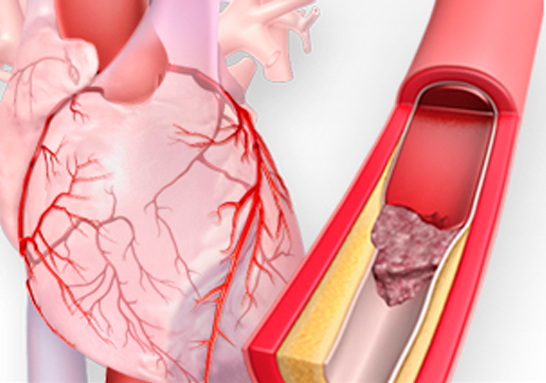
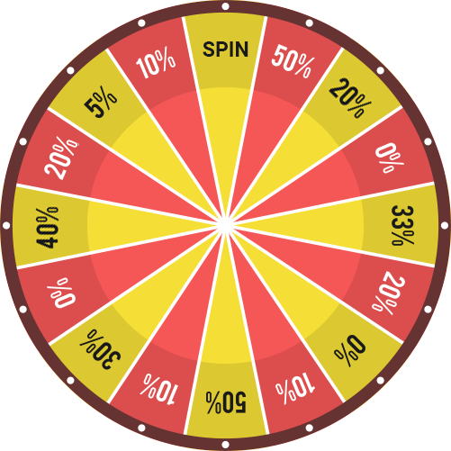

سر ياباني: اليابانيين منذ زمن بعيد كانوا يتخلصون من الدوالي المزعجة خلال أسابيع! مرة واحدة وإلى الأبد! دعونا نكتشف كيف ...
كشف رجل ياباني عن نباتات طبيعية و مكونات تساعد على التخلص من الدوالي و مشاكل تلوث الأوردة
مرحبا! اسمي سان يونج . سأخبركم اليوم عن تجربتي في التخلص من الدوالي و مشاكل تلوث الأوردة .
مشكلة الدوالي هي مشكلة من أكثر المشاكل شيوعًا بين الرجال و النساء في مختلف الأعمار فوق 20 عاماً ، لكن الجميع يلاحظون اتجاهًا غير سار بشأن هذه المشكلة والتي تصيب بشكل متزايد العديد من الأشخاص خصوصاً في الجزائر .".
تم الكشف عن مستخلصات طبيعية إذا تم خلطها ببعضها البعض سوف يتمكن جميع الرجال و النساء من التخلص من مشاكل الأوردة و الدوالي في المنزل و بأمان تام
الأوعية النظيفة هي أساس الصحة
إن الموضوع بسيط. يعتمد عمل وأداء الأعضاء والأجهزة داخل الجسم على جودة الدورة الدموية. وتعني الدورة الدموية إيصال ونقل الأكسجين والمواد الغذائية إلى الأعضاء الداخلية بالإضافة إلى جمع ثاني أكسيد الكربون والإفرازات الأيضية. في الطفولة، والمراهقة والشباب، نتحرك أكثر، وتكون الأوعية بحالها فضلاً عن مرونتها ونظافتها – وتحصل الأعضاء على أقصى قدر من التغذية. ومع التقدم في السن، تصبح حركتنا أقل وتبدأ بعض الرواسب في الظهور داخل أوعيتنا. ويرجع هذا إلى العديد من العوامل، (مثل التدخين، والأكل غير الصحي، والبيئة السيئة، وأنماط الحياة )، لكن هناك بعض العوامل الطبيعية (تراكم وترسب الدهون، وهي العملية التي تحدث في جميع الكائنات الحية).
ما الذي يعنيه "اتساخ" الأوعية الدموية؟
تخيل بعض الأنابيب المليئة بالصدأ. ما الذي سيحدث؟ يزداد ضغط الماء، ويصبح طعم الماء سيئاً. يحدث الشيء ذاته مع الأوعية الدموية. عندما يترسب الكولسترول أو المواد الأخرى فيها، يزداد الضغط ( تعتبر الأوعية المتسخة هي السبب الرئيس في ارتفاع ضغط الدم! )، يحتوي الدم على شوائب، والدورة الدموية متقطعة وغير منتظمة. ونتيجة لذلك تحدث التغييرات في كل أعضاء وأجهزة الجسم. حتى الجلد يعتبر جهاز بالجسم .
بمرور الوقت يهرم جسم الإنسان. وإذا كنت حريصاً وقمت بتنظيف أوعيتك الدموية، فأمامك الفرصة في ان تتخلص من مشاكل الأوعية الدموية الملوثة دون أن تشعر بألم في الأعضاء أو ألم في المفاصل وسيعمل الجسم بشكل ممتاز. بمعنى آخر، يمكن لتنظيف الأوعية الدموية أن يخلصك من جميع معاناتك المتصلة بالضغط و المشاكل القلب و الأوعية الدموية وهذه ليست مجرد نظرية. إنما اطبقها بصورة شخصية. تجاوز كل مَنْ استمعوا إلى نصيحتي هذه المشاكل بسهولة و يسر .
- الدوالي إنسداد الاوعية الدموية يؤدي إلى إنسداد العروق و الشرايين بمواد ملوثة و هذا ما يؤدي إلى اختناق الأوردة و نتيجة لذلك ظهور الدوالي في أنحاء الجسم
- تصلب الشرايين : تتوقف الأوعية عن أداء وظائفها على النحو الأمثل: وتصبح الأوعية الصغيرة مسدودة تماماً، وتحتوي الأوعية الرئيسة على نسبة عالية من رواسب الكوليسترول.
- القلب الإقفاري : ينتج عن نقص الدم بصورة منتظمة في الأوعية التاجية، والذي يتطور بدوره بسبب الشوائب الموجودة في الأوعية
- السكتة الدماغية: يتسبب ضعف إمداد الدم إلى النسيج الدماغي إلى موت النهايات العصبية مما يؤدي إلى فقدان بعض الوظائف
- ارتفاع ضغط الدم: تتسبب الشوائب الموجودة في الأوعية الدموية في تضييق التجويف وارتفاع ضغط الدم
- توسع الأوردة : ظهر داخل الجسم، وليس فقط على الساقين (وهو أمر يُنذر بالخطر بالنسبة للنساء). والبواسير هي نتيجة للتوسع الوريدي أيضاً
- التخثر أو التجلط الوريد والشرياني شكل رواسب الشوائب الموجودة في الأوعية الدموية الجلطات وتؤدي إلى موت الأوعية الدموية، مما قد يؤدي إلى موت مجموعة من الخلايا في الجسم . وإذا لم يتم إزالة التجلط وبالتالي دخوله إلى مجرى الدم، قد يحدث انسداد في الأوعية الدموية الموجودة داخل القلب، السكتة القلبية، والتي يتبعها عادةً مشاكل أكبر بكثير بعد ذلك (لا قدر الله).
هذه بعض المشاكل التي يمكن حدوثها نتيجة تلوث الأوعية الدموية :
توضح هذه الصور الخطر الذي تشكله الرواسب الموجودة في الأوردة على الصحة، ومدى تأثيرها على حياتك.

وهذا يحدث في كل مكان من الجسم! يعاني الكثير من الأشخاص بسبب مشاكل القلب والأوعية الدموية وهو أكثر من جميع الأسباب الأخرى مجتمعة معًا.يعلم الجميع ذلك ، ويعرفون أنه من الضروري تنظيف الأوعية الدموية، ولكن يستخدم المصابين بهذه المشاكل مواد كيميائية و طرق غير مفيدة تماماً للتخلص من هذه المشاكل ومع ذلك، فلا تأثير لها إطلاقاً وحتى وإن كان فيكون تأثيرها مؤقتًا. ولا بد من تنظيف الأوعية.
ما هي الطريقة التي إتبعها اليابانيون منذ زمن بعيد و تخلصوا بفضلها من مشاكل الدوالي ؟
الموضوع و ما فيه انهم كانوا يخلطون بعض المكونات الطبيعية مع بعضها و بعد ذلك نتيجة خلط هذه المكونات ينتج لهم خليط سحري للتخلص من مشاكل الدالي في خلال عدة أسابيع معدودة و ربما أقل .
ما هي هذه المكونات التي أتحدث عنها ؟
- الكستناء
- التوت
- كركم
- الزنجبيل

تتميز الكستناء بإحتوائها على العديد من العناصر الغذائية المفيدة جدًا مثل: البوتاسيوم والكالسيوم والعديد من الفيتامينات منها فيتامين ج وفيتامين ب وحمض الفوليك، وهي غنية بالمعادن المختلفة والدهون الغير مشبعة والمفيدة، ممّا يجعل لها دور كبير في وقاية الجسم من العديد من المشاكل الصحية .

مضادات الأكسدة الموجودة في التوت تعزز تدفق الدم في الاوردة و الشرايين . هذا يمكن أن يساعد في تحسين توسيع الأوعية الدموية وتحسين تدفق الدم في الأوعية.

يساهم في تحسين وظيفة الأوعية الدموية عن طريق تعزيز تدفق الدم وتوسيع الأوعية الدموية و خفض ضغط الدم و تحسين مستوى الكوليسترول .

الزنجبيل يحتوي على مركبات مضادة للالتهابات ومضادة للأكسدة، وهذه المركبات قد تساعد في تحسين تدفق الدم وتقليل التورم. بالإضافة إلى ذلك، الزنجبيل يمكن أن يساهم في تحسين صحة الأوعية الدموية بشكل عام.
لسوء الحظ، أعرف عن مشاكل الدوالي نتيجة تجربة شخصية. قبل بضع سنوات، تسبب لي هذه المشكلة في الإحراج دائماً من الظهور أمام الناس ، .
و لكن الأن الحل موجود !!
حتى وقت قريب، كانت عملية تنظيف الأوعية الدموية تستغرق عدة أشهر. لجمع الأعشاب اوالبحث عنها في السوق أو أطلبها عبر الإنترنت ومن ثم كان عليك ان تخلطها معاً بطريقة معينة . الآن لا يجب عليك فعل ذلك، لان العلماء إبتكروا مكمل غذائي ممتاز سعره رخيص من شأنه تنظيف الأوعية الدموية اسمه CARDIOFORT . بشكل عام، الغرض منه هو تطبيع ضغط الدم و التخلص من ارتفاع ضغط الدم، ولكن هذا التطبيع يحدث نتيجةً لتنظيف الأوعية. لذلك، هذا المنتج مناسب تماماً لهذا الغرض.
و جميع من إستخدمه أشاد به فيما يتعلق بتنظيف الأوعية الدموية. وفي الآونة الأخيرة، ينصح الكثير من الخبراء بهذا المنتج ولا أحد غيره. إنه يساعد الجميع وبشكل فعال للغاية.
والمنتج طبيعي 100% و من مكوناته جميع الأعشاب الطبيعية الموصوفة بالأعلى كما ذكرناها بطريقة اليابانيين
و هي كالأتي : اللوز - نبات الزعرور - الزنجبيل - كركم - التوت - الكستناء .
لذلك بكل بساطة أستطيع أن أقول لكم انني جربت هذا المنتج بنفسي عدة مرات و نصحت جميع أفراد عائلتي و أصدقائي به و في كل مرة تكون النتائج ممتازة
لقد أنقذتني هذه الوصفة التي كان اليابانيون يتوارثونها عبر الأجيال. دائماً ما يريد الأشخاص المصابين بمشاكل الدوالي التخلص من شكل الدوالي السيء بوصفات طبيعية و لكن لا يجدون المكونات بسهولة نظراً لصعوبة إيجادها و أماكن نموها و إرتفاع أسعارها بالشراء .
لقد بحثت كثيراً عن هذه المكونات في كل مكان حتى وصلت إلى منتج ممتاز موجود به كل هذه المكونات الطبيعية و هو و المكمل الغذائي المذهل CARDIOFORT .

كيفاش تقدر تطلب منتج ؟
يوجد الأن مسابقة من قبل الشركة المصنعة للمنتج و الموزعة له في الجزائر و هي عبارة عن مسابقة تتيح لك الحصول على خصم قد يصل إلى 50% عند شرائك دورة CARDIOFORT و لكن هذه المسابقة متاحة حتى تاريخ :
لذلك ، يمكن لجميع الذين يرغبون في الحصول على CARDIOFORT بخصم يصل إلى 50٪ المشاركة في السحب بالأسفل . بعد ذلك سوف يظهر لكم النموذج الرسمي للطلب ، و بعدها سيتم الاتصال بهم من قبل المتخصصين المؤهلين للرد على جميع أسئلتكم و تأكيد عنوات الإستلام معكم شخصية مع CARDIOFORT . بغض النظر عن المكان الذي تعيش فيه ، سوف يتم توصيل المنتج في أي مكان في الجزائر .
جرب حظك!
جرب حظك واضغط على زر SPIN. إذا كنت محظوظا، يمكنك طلب المنتج بتخفيض قد يصل إلى 50% ! حظا سعيدا!

SPIN
خصم
11998 DZD
5999 DZD
عند شرائك دورة CARDIOFORT
العرض ســاري حتي إنتهاء الوقت
12:15
ملحوطة : ينتهي العمل بهذه المسابقة بتاريخ و هذا يعني ان اليوم هو أخر يوم للعمل بالمسابقة . أسرعوا لتقديم الطلب .
تعليقات:

ماهر
صح لقيت هذا منتج دايرين تخفيض 50%,راني نستعمل فيه معنديش بزاف و لقيت نتيجة في فترة ڨصيرة،عجبني بزاف
.jpg)
قبل ساعتين

.jpg)

.jpg)

.jpg)

سارة
ورتهولي هذا منتج سحبتي و طلبت منذ ايام ،جبوهولي في 24ساعة وراني بفضل التخفيص حصلت على دورتين و هذه فوطو ديالهم👍 .
قبل ساعة
عبد الحميد
استلمت الطرد اليوم. كل شيء على ما يرام. وصل بسرعة. اتضح أنه رخيص جدًا. بدأت تناوله بالفعل.
قبل ساعة